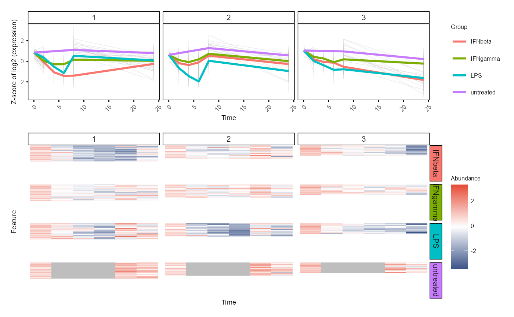

Plot WGCNA modules' mean expression profiles and heatmaps, align vertically.
Different from running WGCNA, the input data should have the replicates merged, instead of having multiple samples per group, time and feature (gene).
If certain time points are missing in some groups, NA values are added.
Usage
plot_modules_v(
module,
se_obj_merged,
scale = TRUE,
assay = 2,
ylabel = "Log2 abundance normalised to Time 0",
suffix = "",
device = "png",
save = NULL,
width = 12,
height = 8,
height_ratio = 2,
fontsize = 8,
res = 300
)Arguments
- module
A data frame with columns "Feature" and "Module"
- se_obj_merged
A SummarizedExperiment object, with one value for each feature at each time point in each group (replicates merged). The colData of the object should contain columns "Sample", "Group", and "Time". The object can be produced by
split_groups(),merge_replicates()andmerge_group().- scale
Whether to scale the data (z-score) across samples for each feature (default is TRUE)
- assay
The assay index in the SummarizedExperiment object to use (default is 2, time 0 normalised data)
- ylabel
Y axis label prefix (default is "Abundance")
- suffix
Suffix for the saved image file name (default is an empty string)
- device
Image file format for saving (default is "png")
- save
Directory to save the plot, no saving if is NULL (default is NULL)
- width
Width of the saved image (default is 12 (cm))
- height
Height of the saved image (default is 8 (cm))
- height_ratio
Ratio of height of heatmap to the line plot (default is 2)
- fontsize
Font size (default is 8)
- res
Resolution of the saved image (except pdf format) (default is 300 (ppi))
Value
Two plots aligned vertically by groups: the top one is a line plot of module feature mean expression profiles, the bottom one is a heatmap of feature expression across time points.
Examples
library(dplyr)
data(example)
example_obj <- normalise_to_start(example_obj)
example_obj_list <- split_groups(example_obj)
example_obj_merged_list <- merge_replicates(example_obj_list)
example_obj_merged <- merge_groups(example_obj_merged_list)
data(example_net)
example_module <- data.frame(Module = as.factor(example_net$colors)) %>%
tibble::rownames_to_column("Feature") %>% arrange(Module)
plot_modules_v(example_module %>% filter(Module != '0'),
example_obj_merged, scale = TRUE,
ylabel = "Z-score of log2 (expression)",
height_ratio = 2,
fontsize = 6)
#> Warning: Removed 159 rows containing non-finite outside the scale range
#> (`stat_summary()`).
